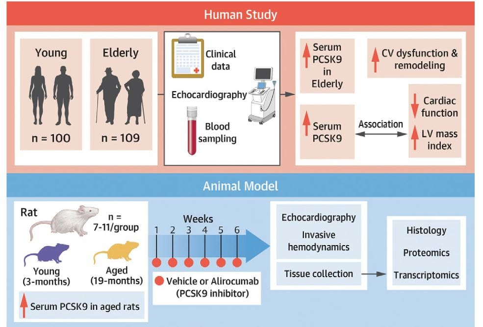

These new PCSK9 inhibitor drugs may actually be treating the AGING process itself, at least in the cardiovascular system and liver.
#pcsk9HD #agingHD #longevityHD
February 2024
Paper · GeroScience · 2023PCSK9: an emerging player in cardiometabolic aging and its potential as a therapeutic target and biomarkerProprotein convertase subtilisin/kexin type 9 (PCSK9), renowned for its pivotal role in low-density lipoprotein (LDL) regulation, has emerged as a compelling regulator of cardiometabolic aging. Beyond its well-established involvement in cholesterol metabolism, PCSK9’s multifaceted influence on the aging processes of the cardiovascular and metabolic systems is garnering increasing attention. This review delves into…doi.org
Proprotein convertase subtilisin/kexin type 9 (PCSK9), renowned for its pivotal role in low-density lipoprotein (LDL) regulation, has emerged as a compelling regulator of cardiometabolic aging. Beyond its well-established involvement in cholesterol metabolism, PCSK9’s multifaceted influence on the aging processes of the cardiovascular and metabolic systems is garnering increasing attention.
This review delves into the evolving landscape of PCSK9 in the context of cardiometabolic aging, offering fresh insights into its potential implications. Drawing inspiration from pioneering research conducted by the Pacher laboratory (Arif et al., Geroscience, 2023, PMID: 37726433), we delve into the intricate interplay of PCSK9 within the aging heart and liver, shedding light on its newfound significance. Recent studies underscore PCSK9’s pivotal role in liver aging, suggesting intriguing connections between hepatic aging, lipid metabolism, and cardiovascular health. Additionally, we explore the therapeutic potential of PCSK9 as both a target and a biomarker, within the context of age-related cardiovascular disease.
